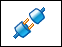

Outputting to Capital format
You can exchange data between Solid Edge and Capital in both connected and disconnected mode.
To exchange data:
-
To import wiring CMP and CON data from Capital Logic, on the Harness Wizard – Step 1 of 3 dialog box, select Siemens – Capital Logic from the Document format list.
-
To export wiring CMP and CON data to Capital Logic, on the Save as ECAD dialog box, select Siemens – Capital Logic from the Document format list. From within Capital Logic, you need to do a bridge in to import the lengths and wires from Solid Edge.
-
To export wiring harness topology data from Solid Edge Electrical Routing to Capital HarnessXC, on the Save as ECAD dialog box, select Siemens – Capital HarnessXC from the Document format list.
Exchange data between Solid Edge and Capital in disconnected mode
To exchange data in disconnected mode:
-
In Solid Edge, once you have prepared the harness, on the File menu, point to Save As, then choose Save As ECAD.
-
Do one of the following:
-
To transfer only wiring information, on the Save As ECAD dialog box, set the Document field to Siemens – Capital Logic and click OK.
-
To transfer harness topology, On the Save As ECAD dialog box, set the Document field to Siemens – Capital HarnessXC and click OK.
-
-
On the Siemens – Capital Logic dialog box or the Siemens – Capital HarnessXC dialog box, specify a name and location for the file and click Save.
You are now ready to import the harness information into Capital.
-
In Capital Logic, click Workflow → Bridge In.
-
On the File Open dialog box, use the Browse button to locate and select the .xml file and then click Open.
The .xml file is imported and the harness preview displays the 2D representation of the harness design.
-
Click Process to create the harness drawing.
Exchange data between Solid Edge and Capital in connected mode
To exchange data in connected mode:
-
Once you have prepared the harness in Solid Edge, open Capital.
-
In Capital, click the Workflow→Configure button
 .
. -
On the Connection Properties dialog box, enter the appropriate Port name for the Remote Application and Local Application.
-
In Solid Edge Electrical Routing, click the Home→Electrical→Connect

button.A log viewer displays actions and information about the transactions between Solid Edge and Capital.
-
In Capital, click the Workflow→Solid Edge Connect button.
-
In Capital, click Workflow → Bridge In to display the 2D representation of harness topology created in Solid Edge.